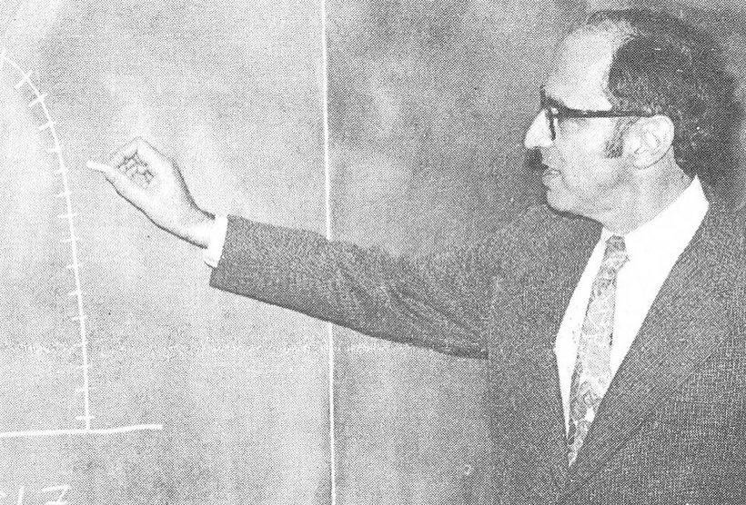
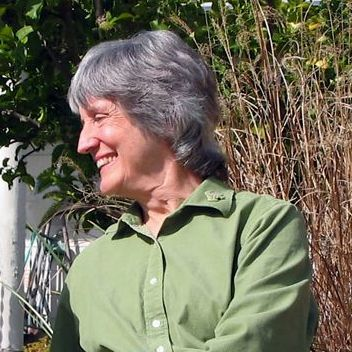
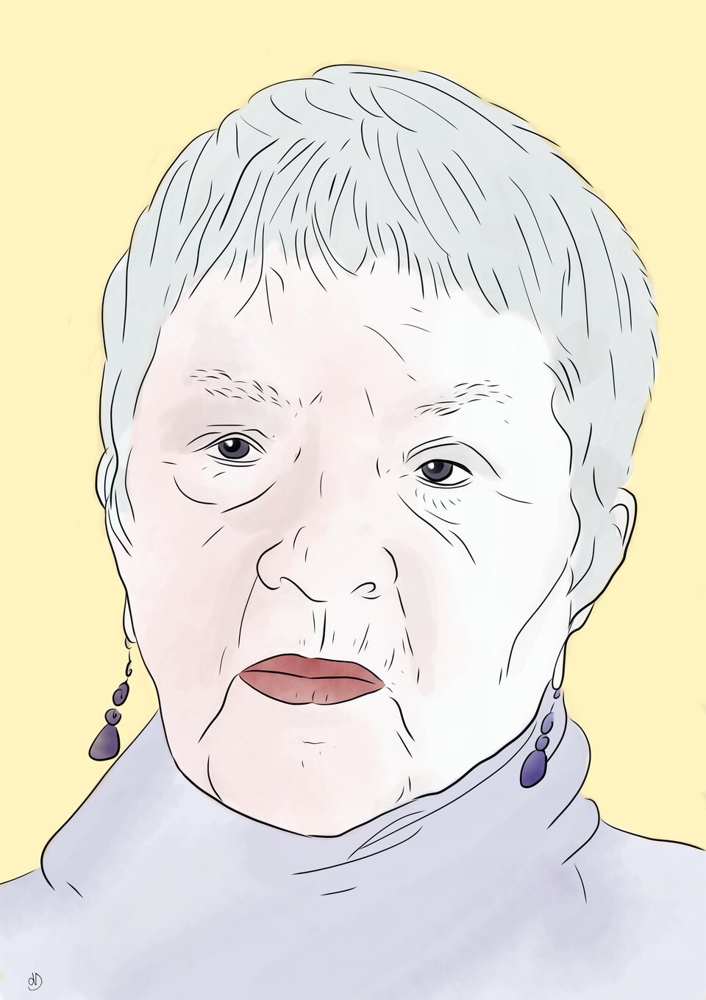

CH 1What is feminism and what does it have to do with science?
Where it starts, which is a fight about monkeys
The chapter opens on primatology in the 1970s and 1980s. Primatology is the study of monkeys and apes, and it was one of the fields women entered in numbers as the doors opened.
The settled view of primate sex lives before they arrived. Males are promiscuous, meaning they mate with many partners. Females are coy, meaning picky and tending to stick with one. And there was a tidy double explanation for it. The biological half: a female can carry one offspring at a time while a male can father many at once, so a male gains by spreading himself around and a female gains nothing. The evolutionary half: a male who fathers many offspring is likelier to have some survive, while a female gets one shot and so must pick a male who will stay and protect what she produces.
Then women went and watched the females. And found that female primates were often just as promiscuous as the males. The theory that came out of it reverses the logic of the old one: if several males each have reason to think the infant might be theirs, several males have reason to protect it, and an infant with several protectors is likelier to survive. So mating with many males is an advantage for the mother, which is exactly what the old account said it could not be.
The paper the chapter cites is Sarah Blaffer Hrdy, 1986, and its title names the problem: the myth of the coy female.
Now the question the chapter actually cares about, which is a question about observers. How did they see it? The authors rule out the flattering answer in one line, with an exclamation mark: it is quite dubious that women scientists are somehow just better observers. So what is left? They list the candidates and leave them open, because the rest of the book is the answer.
- They asked different questions.
- They set out to observe different things.
- They used different methods.
- They were more willing to doubt what everyone already believed.
And here is why that is a problem for philosophy. Every one of those four is about who was doing the looking. Philosophy had spent three centuries insisting that could not matter.
The behaviour was not invisible. It was filed as noise. Fieldworkers had seen female primates mating outside the group, and recorded it as an aberration, a stray, something not worth counting. The theory said females are monogamous, so an unmonogamous female was an exception, and exceptions do not go in the dataset.
Which is week 3 turning up again: observation is theory-laden, meaning what you count as data depends on what you already expect. The new observers did not have better eyes. They had a different idea of what counted as a thing happening.
What they mean by feminism, which is narrower than you expect
They know the word carries a hundred meanings, so they pick one and say so. Their definition, which is worth having close to the words they use:
Feminism is an emancipatory political movement with the aim of ending oppressive structures based on gender ideologies and norms that divide the world into two classes of people with distinct social roles, men and women, that tend to systematically empower men and disempower women.Crasnow and Intemann, p. 3
In plain words. Societies sort people into two boxes, hand each box a different set of jobs and expectations, and the arrangement reliably gives men more power. Feminism is the movement to end that arrangement. They call this a minimalist definition, meaning the smallest version nearly every feminist would sign, and they say outright that disagreement starts immediately afterwards, over how deep the problem goes and what to do about it.
Even that small definition drags four commitments in with it, and the fourth is the one that matters for the course.
- Power is distributed unevenly, and gender is one of the things it is distributed along.
- So you have to look at the institutions, since that uneven distribution is built into how societies are organised.
- It is a political movement, which means describing the arrangement is only half of it. The point is to change it.
- Ending the oppression of women cannot be separated from ending oppression generally.
Why the fourth follows, in their own reasoning. Women are members of every race, class, religion, sexuality and ability, so there is no such thing as the oppression of women on its own, with everything else held still. And how sexism works is different depending on what else a woman is: what counts as feminine differs by race and by class, so a rule aimed at women in general fits almost nobody exactly. The word for this is intersectionality: identities overlap, and the overlap is not the sum of the parts.
One more sentence, and it is the one a careless reader loses. By women they mean those who identify as women or are taken by others to be women, and are oppressed as a result. They say explicitly that they reject accounts based on biological essentialism, which is the idea that there is some biological fact that makes a person a woman and settles what she is like.
The other half of the title, which needs unpacking too
Two fields, overlapping. The study of knowledge is called epistemology: what knowing is, how it differs from merely believing, and what makes one claim better supported than another. Philosophy of science takes science as its subject, and since science is usually treated as the best example of knowledge anybody has, the two overlap heavily.
What philosophy of science does that epistemology does not. It works on the concepts a particular science uses, such as what a species is in biology or what spacetime is in physics. It works on the moves scientists make: what counts as evidence, what confirms a theory, what makes an explanation a good one. It argues about what science is for. And it deals with science in the world: expert advice to governments, and the ethics of doing the research and of using the results.
Now the difficulty the authors raise against themselves, which they could easily have skipped. You can see how feminism touches the last group, the ethics and the policy. It is much harder to see what it has to do with the relationship between belief and knowledge, or with what makes evidence evidence. Those look like questions with no politics in them at all.
So the reception was cold, and they say so. When this work appeared in the 1980s and 1990s, traditional epistemologists and philosophers of science did not welcome it. At best it was thought irrelevant. At worst it was thought to be an attack on the possibility of objective knowledge. Keep that sentence: this chapter is written by people who know the field thinks they might be dangerous, and the whole book is the reply.
How this became a field at all
Their short answer: in the second half of the twentieth century the understanding of knowledge shifted, and the shift was the recognition that social, cultural and historical setting affects what gets produced. Once that is granted, the obvious next question is which social things matter. Gender is one candidate, and feminist epistemology is what you get by following it.
And the shift came from two directions at once, which is the part worth remembering.
- From inside science. More women in the workplace, including scientific work. Some pushed through blocked doors by breaking norms, some with the help of sympathetic men in the field, some through law. And on arriving they found that the questions they wanted to ask and the ways they wanted to ask them were unlike what the field already did. The authors are careful about why: having been raised under different arrangements, which produced different experiences, interests and skills. Biology, they say, is unlikely to be it.
- From inside philosophy. The name attached to this is Thomas Kuhn, 1962, which is week 3 of this course. Science done inside a paradigm, meaning the settled picture a field works within, run by a community with shared commitments, is already a social account of knowledge. They add that collaboration in twentieth-century science made the social nature harder to miss, and then undercut their own point in brackets: Newton said he saw further by standing on the shoulders of giants, so science was never the work of lone individuals and the perception that it was is probably just wrong.

Then four paragraphs on why any of this is worth caring about, which is the authors answering a reader who finds all of it abstract. Knowledge is power, in a literal sense: it is what lets anybody make a decision that works. Scientific knowledge decides how environmental, health and social problems get handled. It comes with technologies that reshape how people live. Jobs in knowledge-producing work are growing, so who gets into those fields is also a question about money.
And the sharp version, which is about harm and gives three cases.
- Drug safety. When a drug is tested, you want to know it is safe for everyone likely to take it, and not for whoever happened to be in the trial.
- Animal behaviour. When watching animals, you want to be sure you are not reading your own social arrangements into what they do. Which is the langurs.
- The brain. When studying it, you want to be sure the findings are not the stereotypes you brought with you about sex, race, class or cognitive difference coming back out with a number attached.
Plus one that is about the knowledge and not about the people. If social factors decide who can fully take part in a field, that limits those people's lives, and it may also limit what the field manages to find out, which is a loss to everybody. That sentence is the thesis of chapter 7 and it is the one the course keeps returning to.
The six questions
The rest of the chapter walks through them, one per chapter of the book. Each follows the same shape: here is what the tradition assumed, often without noticing it was assuming anything, and here is what changes when you stop.
1 · Who knows?
The complaint is that the question was never asked. Theories of knowledge argued endlessly about what is known and skipped past who is doing it, which meant the assumptions about knowers were never examined, because nobody noticed there were any.
First problem: who was allowed to count as a knower. Reason is supposed to be a universal human capacity, and a long line of philosophers wrote women out of it anyway. Aristotle held that women were not men's equals in several respects, reason among them, and said a woman's reason lacks authority. Kant gets named too. The pattern the authors point at: knowledge is defined as what fully human beings can do, and then there is an argument about who is fully human, and women keep losing it.
Second problem, and this is the bigger one. Set aside who has the capacities. The tradition held that the only features of a knower that matter are cognitive ones: reasoning, perceiving. Everything else about a person, the time and place and gender and race and class and sexuality and ability, is irrelevant by assumption. Lorraine Code's line for this is the one to keep: philosophers commonly treat the knower as a featureless abstraction.
And she shows it in the field's own notation. Epistemology is written as S knows that p, where p is some claim and S is whoever knows it. All the work goes into the conditions on p. Nobody asks who S is, because the notation has already answered: S is a letter. The authors' point is that reducing a person to a variable is not a neutral simplification, it is a decision that their features do not matter, taken before any argument.
There is a second thing hiding in the formula. S is singular. The knower is one person, knowing by their own mental capacities, cut off from everybody else. Real people are in a body, in a place, at a time, and tangled up with other people. The abstract knower is none of those.
2 · What do we have knowledge of?
Back to the formula: p is a proposition, meaning a claim that can be true or false. The long-standing view is that when the conditions are met, what you know is a true claim about a world that is there whether or not anybody is looking. Knowing is the mind getting hold of something out there, and there is one right way to get it.
Feminists agree that what we know is the world. The disagreement is about what that means in practice, and it comes in two steps.
Step one: somebody picked the subject. Research happens because a question got asked, and questions get asked by people who find something interesting. The female primatologists were interested in what female primates did and in their role in evolution, partly because nobody had bothered, and that interest is a product of their own history. No interest, no question, no data.
Step two: having picked a subject, somebody picked which parts of it to look at. Female primate behaviour that had nothing to do with reproduction had also been skipped, because it did not look evolutionarily interesting. The phrase the authors use is that we are interested in truths that are thought to be significant, and not in all truths. There is an infinity of true things. Research chases the ones somebody cares about.
Research on heart disease was, for a long time, research on heart disease in men. The reason given at the time was that it was the leading cause of death in men in industrialised countries, so it was urgent.
It is also the leading cause of death in women. So why did that not make it equally urgent? The authors give a blunt reason: the deaths that registered were the deaths of working men in their prime, because of the economic hole they left. Women were not in the workforce in the same numbers, so their deaths were less visible.
And then the medical consequence, which is the part that makes this more than unfairness. Heart disease often runs a different course in women and shows different symptoms. With the disease defined by how it looks in men, heart disease in women was missed and misdiagnosed. The knowledge itself came out wrong, on top of being unevenly spread.
The damage outlasts the research. A survey from 2017 found that most of the public, and most doctors, still did not know heart disease is the leading cause of death in women.
The sentence to carry into the exam: it looked like the object of inquiry was heart disease, and in fact it was heart disease in men.
Which leads straight to the objection the whole field lives with. If what you know depends on where you stand, then different people get different knowledge. Sometimes that is harmless: I have been to Mexico and you have not, so I know things you do not. It stops being harmless when the subject is supposed to be universal. It would be alarming if the social position of the physicist changed the relationship between force, mass and acceleration. And if position always shapes what is known, that looks like saying knowledge is subjective, and from there it is a short step to relativism, the view that what is true depends entirely on who is asking.
Their reply has two moves, and the second is the one to remember.
First, name what the other side is actually asking for. Traditional accounts assume you can know the world as it would be with nobody in it. Donna Haraway calls this the god trick, meaning the trick of seeming to see from everywhere and nowhere at once. Thomas Nagel calls the same thing the view from nowhere. Both names are worth having, because both are doing the same job: making an assumption visible that had been passing as common sense.
Second, and this is the line to underline: to say the world is known from some position does not mean it is not known as it really is. It means it is not known completely. And the authors add, flatly, that this is hardly a controversial claim. Partial is not false. Nobody ever thought one study saw everything; the only thing being given up is the pretence that somebody was standing outside.

One more thing comes out of this section and it is easy to miss. If the traditional picture assumes knowledge has one aim, accurately representing the world, then noticing that interests drive research opens up others. People want to know in order to change things, which is a practical aim. People also want to know for careers, fame and prestige, which the authors say plainly. So the field now talks about the aims of science in the plural, and feminist philosophers have generally welcomed that.
And it brings in values. To say we study what matters to us is to say we study what we value. Values also decide when there is enough evidence to act on something. So the contrast is between the old ideal of value-free science, meaning science with no politics or preferences in it anywhere, and the position of many feminists that this field should be openly shaped by feminist aims.
3 · How do we know?
The oldest question of the three, and the traditional answer is method. What counts as evidence, how much of it is enough, what confirms a theory. And the usual way of securing it: get the method right and the method will cancel out whatever is peculiar to the person using it. That is where objectivity was supposed to come from.
The problem with leaning on method. Once you grant that knowers are situated and that producing knowledge is a social process, it is no longer clear how method could do that job, because the method is also being applied by situated people.
So they attack the phrase itself. Talking about the scientific method is misleading, because it suggests one correct procedure where there are many different activities. Chapter 4 breaks research into nine phases, and the point of the number is that every phase takes a decision somebody has to make, and every decision is open to influence: what to study, what question to ask, what counts as evidence, how to collect it, how to read it, when there is enough to conclude. Not one of those is forced by nature.
And then the three names chapter 4 is built on, which are worth knowing now because weeks 6 and 7 are that chapter.
- Helen Longino. Objectivity is a property of a community, and never of a lone researcher. Her question is how a knowing community should be organised and what rules it should keep, so that criticism actually reaches the people who need to hear it.
- Sandra Harding and Alison Wylie. Standpoint theory, which is the term in the week's title. The claim is that some social positions give a better view of how a system works, usually the positions of those the system works against, and that this can be used on purpose to produce knowledge that is both objective and useful for equality.
- Elizabeth Anderson and Sharyn Clough, working in the pragmatist tradition, argue that evidence bears on values as well as on beliefs. If that is right, then judging whether a value is well-founded is not a different kind of operation from judging whether a belief is, and the worry about values in science loses its force.

4 · What don’t we know?
The field this belongs to has a name you will not have met, and it is almost certainly examinable. Agnotology is the study of ignorance: what we do not know, and why we do not know it. Set beside epistemology, the study of knowledge, which has had the whole field to itself for two thousand years.
The obvious answer to the question is the wrong one. Asked what we do not know, the natural reply is everything we have not got round to yet. The claim of the field is that ignorance is often not an empty space, it is something produced, by social and institutional arrangements, sometimes on purpose and sometimes not.
The case they give is the clearest one there is. Naomi Oreskes and Erik Conway showed that private industry and think tanks have run what amounts to a playbook for undermining science, used on the health effects of smoking and then on climate change. The move is not to prove the science wrong. It is to manufacture the appearance of an unsettled argument, so that acting looks premature, so that regulation waits. The ignorance is the product, and somebody is paying for it.
Then the part that makes this feminist, where a story about lobbyists would have stopped. Industry does it for profit. But the effect of manufactured doubt is always to keep things as they are. So feminists, critical race theorists, postcolonial theorists and critical disability theorists all turned up in this field, asking what sexism, racism, classism, colonialism and ableism keep people from knowing. The thought is the one from earlier, run backwards: if knowledge is power, then what nobody knows is also power, and keeping something unknown is a way of keeping things as they are.
5 · Why does it matter what we know?
Everything above matters because knowledge is worth having. Working out what knowing is, who does it, and how, is how you find out what makes knowledge-production succeed and therefore how to improve it. The authors call this a normative project, meaning one that produces recommendations and never stops at description, and they say feminists have taken it up more directly than most.
Their method for it is historical. Look at cases from the history of science, the failures as well as the successes, and build advice out of them: when to treat something as established, when to claim one thing caused another, what makes an explanation good, how to avoid bias, how to organise a research community.
And then the term chapter 6 is named for. Epistemic injustice is a wrong done to somebody specifically as a knower. The two forms the chapter points at: being denied the resources needed to make sense of your own experience, and not being taken seriously when you report it. Both are harms even when nothing else happens to you, because what is taken from you is your standing as somebody who knows things.
The line that holds the section together: knowledge-producing practices can reinforce systems of oppression or challenge them, and which one happens is not an accident.
6 · How can we know better?
The last chapter, and the authors open it with a caveat. What counts as knowing better depends on what you mean by better. Their answer uses two standards at once: knowledge that is sound and true, and knowledge that helps achieve social ends and avoids epistemic harms.
The two-part claim that closes the chapter, and this is the one to have ready.
- Shutting people out of knowledge production is unjust to them. Few people argue with this.
- It also damages the knowledge. A field that systematically excludes a group produces worse results than it otherwise would. This is the interesting claim, because it means a person who cares nothing for justice still has a reason to want the exclusion to stop.
And they say plainly that the second claim is not settled. There are competing explanations for why exclusion should damage the knowledge, and rival accounts of how a research community ought to be arranged instead. Chapter 7 is where they are compared.
- It answers week 3. Kuhn said science runs on the shared commitments of a community. This chapter takes the next step: then it matters who is in the community.
- It answers week 4. Sismondo showed science is stratified and that women are pushed out. That chapter is about people. This one asks what it does to the knowledge.
- It is answered by its own critics, who say that once the view from nowhere goes, nothing is left to settle disagreements with. The authors name the objection in the chapter and spend chapters 3 and 4 on it.
- It sets up weeks 6 and 7, which are chapter 4 of this book, how do we know, and chapter 5, what don’t we know, plus two chapters of the Routledge handbook.
- It sets up weeks 8 and 9. Tremain on disability is the fourth commitment in action: a book about feminism that is about disability, because the oppressions are not separable.
For the curiousNot examinable
Hrdy was told her langurs were a special case
Hrdy's early fieldwork was on grey langurs at Mount Abu in Rajasthan, and what she was explaining was infanticide: males taking over a troop killed the infants of the previous male. Her account was that mating with several males gives a mother insurance, because a male who might be the father is less likely to kill.
The response for years was that langurs were an oddity, stressed by crowding near human settlements, and that nothing general followed. The behaviour has since been recorded across many primate species. The pattern is the one in this chapter: an observation that does not fit gets filed as a local anomaly, and goes on being an anomaly until enough people are looking for it.
The 1986 paper is a reply to Darwin
The coy female is not a casual assumption somebody made up. It goes back to Darwin's Descent of Man of 1871, where females are described as choosy and comparatively passive while males compete. The idea was given a numerical form in 1948 by A. J. Bateman, working on fruit flies, who concluded that male reproductive success rises with the number of mates while female success does not.
Bateman's experiment was repeated in 2012 and the result did not hold up: his method had systematically undercounted the offspring of females with several mates. So the quantitative backing for the coy female was faulty for sixty years, and the reason nobody rechecked it is the reason this chapter is about.
The heart disease case has a name in clinical medicine
The 2017 paper cited in the chapter is about INOCA, ischemia with no obstructive coronary artery disease. Ischemia means the heart muscle is not getting enough blood, and the standard test looks for a blocked major artery. A patient can have real, dangerous ischemia with no such blockage, because the problem is in the small vessels instead. It is much commoner in women.
So a woman with genuine heart disease could pass the test, be told her arteries are clear and be sent home. The test was not broken. It was built around what the disease looks like in the group it was studied in.
Haraway is better known for something else entirely
The Situated Knowledges paper of 1988 is the one this chapter needs. Four years earlier she had published A Cyborg Manifesto, which argues that the boundaries between human and animal, and between organism and machine, have already broken down, and that feminism should take the cyborg as its figure, in place of any appeal to a natural womanhood.
It was read far outside philosophy and is still the thing she is cited for in art schools and literature departments. The two are connected: both refuse an argument that rests on what women naturally are, which is the same refusal Crasnow and Intemann make in one sentence on page 4.